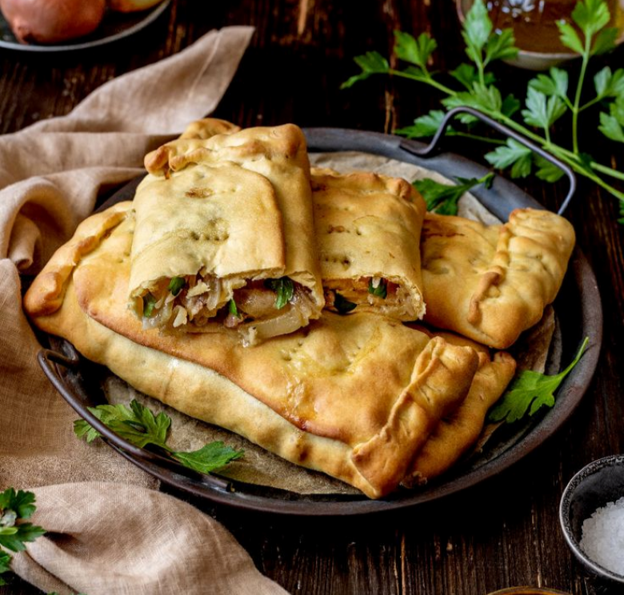
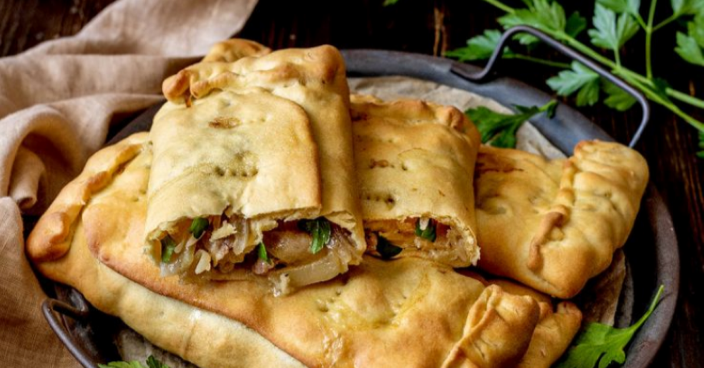

Secondi piatti
Schiacciate:
- 500 gr di semola
- 250 gr di farina 00
- 1 Cipolla ( 60 g)
- 1 cucchiaino raso di sale
- 1 cucchiaino raso di zucchero
- 50 gr di strutto
- 25 gr di lievito di birra
- 400 ml di acqua fredda
- 300 gr di salsiccia di maiale
- 500 gr di broccoli
- 60 gr di olive nere denocciolate
- Sale
- Pepe
- Peperoncino
- Olio extravergine di oliva
- 1 spicchio d’aglio


Procedimento:
- In una terrina sbriciolate il lievito, aggiungete 50 ml di acqua tepida e scioglietelo con le mani.
- A questo punto unite un cucchiaio di farina, lo zucchero, mescolate e lasciate riposare il composto per circa 30 minuti coprendolo con un canovaccio asciutto.
- In un’ampia ciotola mettete la restante farina e la semola. Al centro delle farine ricavate un foro e riempitelo con lo strutto, il composto di lievito e la restante acqua tiepida. Mescolate bene e impastate.
- Trasferite l’impasto su una spianatoia e lavoratelo fino a renderlo omogeneo ed elastico. Formate una palla con l’impasto, sistematelo in una ciotola unta, copritelo con un panno asciutto e conservatelo in un luogo asciutto per 1 ora
- Private la salsiccia della pelle e sgranatela. In una padella molto ampia scaldate un filo d’olio extravergine di oliva e soffriggete uno spicchio d’aglio.
- Aggiungete la salsiccia e fatela dorare su tutti i lati, poi spegnete il fuoco.
- A questo punto potete scegliere se utilizzare il sugo per condire la pasta e da mangiare come secondo la carne oppure come faccio io: potete ottenere un ragù super gustoso per il vostro primo piatto, vi basterà disossare la carne, che sarà talmente morbida che ci vorrà davvero un attimo a farlo, sfilacciarla ed unire il tutto al sugo, così condire la vostra pasta vi assicuro che otterrete un piatto super gustoso inoltre con una spolverata di ricotta salata prima di servirlo e davvero qualcosa di speciale.
- Pulite i broccoli e tagliateli a pezzetti, sbollentateli per qualche minuto in acqua bollente leggermente salata, poi scolateli per bene.
- Scaldate la padella con la salsiccia, aggiungete i broccoli e fateli saltare. Regolate di sale, di pepe e insaporite a piacere con un po’ di peperoncino, in ultimo aggiungete le olive nere denocciolate
- Dividete l’impasto in due parti uguali e ricavatene due sfoglie sottili. Stendete una sfoglia nella teglia unta, copritela con la farcia di broccoli e salsiccia, poi copritela con l’altra sfoglia, sigillando bene i lembi di chiusura con una leggera pressione delle dita
- Bucate la superficie della scacciata in più punti con i rebbi di una forchetta e lasciate riposare per 20 minuti.
- Preriscaldate il forno statico a 200°C o ventilato a 180°C e infornate la scacciata per 30/40 minuti fino a quando la superficie non sarà ben dorata e croccante.